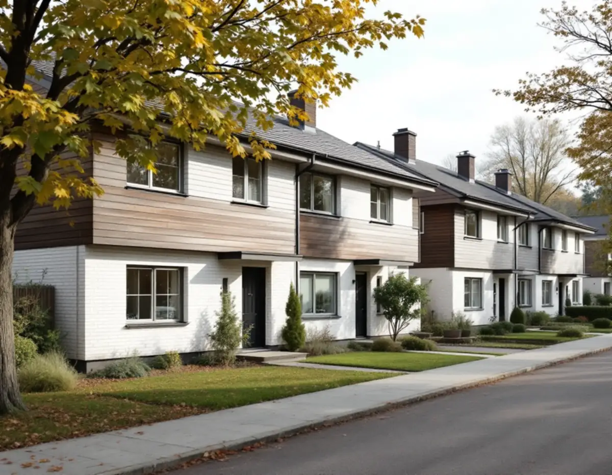
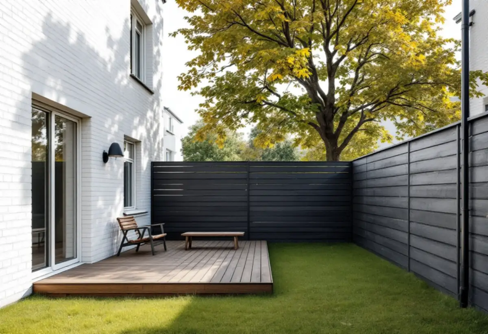

Underlaget och kartan
Vi ser om husgruppen finns med i kunskapsunderlaget för kulturmiljö.
Radhus och kedjehus från 1950-, 60- och 70-talen står i grupper där varje hus är en del av en helhet. Upplands Väsbys kunskapsunderlag för kulturmiljö från maj 2025 pekar ut flera sådana områden som särskilt värdefulla, och där gäller andra regler för en tillbyggnad än på resten av tomterna i kommunen. Geal Entreprenad AB bygger till småhus som total entreprenad. Här går vi igenom vad underlaget och kommunen säger.

Underlaget beskriver radhus och kedjehus från 1960- och 70-talen som en egen karaktärsmiljö. De östra kommundelarna växte fram med många småhus och radhus, placerade som separata enklaver längs säckgator, med bilfria gång- och cykelstråk från vändplanerna. Uttrycket skiljer sig mellan grupperna av atriumhus, radhus och kedjehus, men inom varje grupp är husen enhetligt utförda.
Husen är enkla volymer i en eller två våningar, eller två våningar i suterräng, med platta eller flacka tak, enluftsfönster utan spröjs och infällda balkonger. Vanliga material är rött tegel, vitt kalkcementtegel och målad träpanel, ofta med en kraftig takfot. Till husen hör förgårdsmark och små trädgårdar eller atriumgårdar, ofta avgränsade av plank. Exempel finns i Sjukyrkoberget, Skälby, Fresta och Odenslunda och centralt i Apoteksskogen.
Vägledningen för den här miljön säger att husgruppernas enhetliga volymverkan, strikta planform, taklandskap och skalverkan ska bibehållas, och att tillbyggnader som bryter ursprungsvolymen ska undvikas. Förgårdsmarken bör inte hårdgöras eller privatiseras.

Skälby byggdes 1965 med Nils Karlsson som arkitekt och Ytonghus som byggaktör, och området bedöms som ett särskilt värdefullt bebyggelseområde enligt plan- och bygglagen 8 kap. 13 §. Radhusen är vinkelhus i en våning som ansluter till grannhusen så att en privat atriumgård bildas på baksidan, avgränsad med plank mot de gemensamma ytorna.
Fasaderna är av vitt mexitegel med mörkmålad sockel och en mörk, liggande träpanel där fasaden möter taket. Taken var ursprungligen täckta med papp och växlar mellan lutande och platt. Vägledningen säger att områdets höjdskala, planform och rytmiska variation av takformer ska behållas och att påbyggnader ska undvikas. Kontrasten mellan de privata atriumgårdarna och de gemensamma gårdsrummen ska också bibehållas.
En tillbyggnad i Skälby bör alltså inte höja huset, och kontrasten mot de gemensamma gårdsrummen ska finnas kvar. Hur färgsättningen i området ser ut beskriver vi under målare i Upplands Väsby.
Ägget i Runby byggdes 1957–61 av Gösta Wikforss, Skanska och Sune Lindström vid VBB, och har ett hundratal kedjehus i fyra hustyper. Båtsmansvägen löper som en ellips längs kanten, med högre hus i ovankant mot skogen och lägre på den flacka marken i söder. Den första hustypen är ett kedjehus i en och en halv våning med rött tegel i bottenvåningen, branta tak och mindre, indragna garage som binder ihop husen.
Området bedöms som särskilt värdefullt och som en symbol för 1950-talets planeringsideal. Vägledningen säger att tillbyggnader som bryter ursprungsvolymen ska undvikas, att området är känsligt för förtätning och att husgruppernas enhetliga volymverkan och taklandskap ska bibehållas. Underlaget noterar att flera tak i dag har betongpannor, trots att de ursprungligen var utförda med rött tvåkupigt lertegel.
Upplands Väsby kommun skriver att huvudregeln är bygglov för tillbyggnader, med undantag för lovfria tillbyggnader på högst 30,0 kvadratmeter som inte går över taknocken och ligger minst 4,5 meter från tomtgränsen eller har grannens medgivande. Bygglov krävs ändå om tillbyggnaden görs på en kulturhistoriskt värdefull byggnad, inom ett kulturhistoriskt särskilt värdefullt område eller där detaljplanen har utökad lovplikt. Kunskapsunderlaget påpekar att det inte är en uttömmande inventering, och att mindre grupper bara finns markerade på karta.
Att tillbyggnaden är lovfri gäller bara det som tillkommer. Anmälan kan krävas för ingrepp i det befintliga husets bärande stomme, till exempel om en bärande vägg påverkas, och för installation av vatten och avlopp, eldstad, rökkanal eller ventilation. Boverket skriver att anmälan också kan krävas om brandskyddet i den befintliga byggnaden påverkas väsentligt, något som är värt att utreda när husen sitter ihop. Kartunderlag och VA beskriver vi under byggföretag i Upplands Väsby.
Vi ser om husgruppen finns med i kunskapsunderlaget för kulturmiljö.
Gårdens gränser, väggarna mot grannhusen och takets form ses över.
Tillbyggnaden ritas så att gruppens höjd och takfot behålls.
Arbete, material och handlingar redovisas var för sig.
Bygglov, anmälan om stomme eller brandskydd och kontrollplan tas fram.
Stomme, tak och anslutningar mot det befintliga huset samordnas av oss.
Rotavdraget är 30 procent av arbetskostnaden, högst 50 000 kronor per person och år och högst 75 000 kronor tillsammans med rutavdrag. Material och resor ger inget avdrag.
Skatteverket godkänner en tillbyggnad av ett småhus om en av tillbyggnadens sidor sitter ihop med husets yttervägg till minst 75 procent eller om det finns en dörr emellan, och om bostaden är äldre än fem år. Att bygga en altan ger avdrag om den byggs ihop med huset, men inte staket och murar. Vi drar avdraget direkt på fakturan.
Tillbyggnadens storlek, hur den ansluter mot tak och väggar som delas med grannhuset och om bygglov krävs med hänsyn till områdets värden påverkar mest. Efter ett gratis platsbesök får du ett skriftligt kostnadsförslag.
Mer boyta i samma hus.
Tillbyggnad →Takbyte, takbesiktning och plåtarbeten.
Takläggare i Upplands Väsby →Bollstanäs, Vilunda och Runby.
Takrenovering i Upplands Väsby →Radhus, suterräng och samfälld VA.
Badrumsrenovering i Upplands Väsby →Karta, VA och tomtgräns.
Byggföretag i Upplands Väsby →Sekelskiftesvillorna längs Gamla vägen.
Fasadmålning i Upplands Väsby →Radhus från 70-talet och hus från bomässan.
Fasadrenovering i Upplands Väsby →Inflygning, trafik och tystare fönster i Väsby.
Fönsterbyte i Upplands Väsby →Kedjehusens fönster, kulör och beslag.
Fönsterrenovering i Upplands Väsby →Kedjehus, suterräng och radon.
Golvläggare i Upplands Väsby →Slipa trägolvet i radhuset på platta.
Golvslipning i Upplands Väsby →Radhus, kedjehus och atriumhus.
Köksrenovering i Upplands Väsby →Radhus, kedjehus och villor i Väsby.
Målare i Upplands Väsby →Rännor, stuprör och radhusplåt i Väsby.
Plåtslagare i Upplands Väsby →Altan, plank och förråd vid radhus och kedjehus.
Snickare i Upplands Väsby →Nytt tak, solceller och väderradarn.
Takbyte i Upplands Väsby →